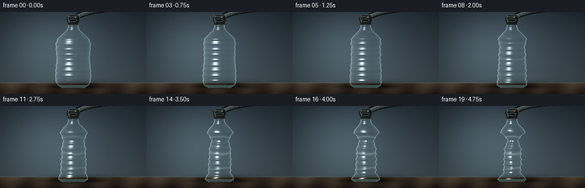
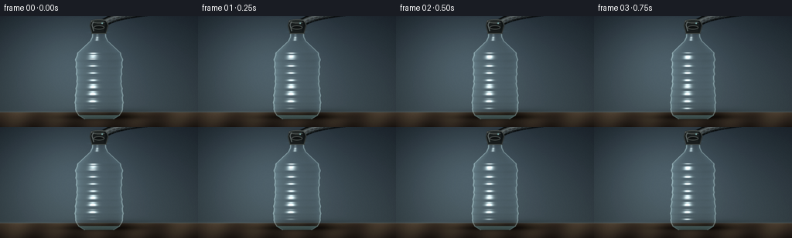
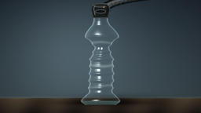

CODING AGENTS AS PIXEL WORLD MODELS
traex/DeepSeek-V4.1-Flash · phygen_016
点击播放 · 原生 RGB 像素
逐轮保存的候选
回放视频、检查图与代码变化。
每份候选均可单独播放。实际图片检查记录在下方工具轨迹中。
候选 01播放与检查图
点击播放 · 原生 RGB 像素


展开代码变化
--- 上一保存版本
+++ 本次保存版本
@@ -0,0 +1,318 @@
+from pathlib import Path
+
+import numpy as np
+from PIL import Image, ImageDraw, ImageFilter
+
+import artifact_io
+
+
+W, H, N = 256, 144, 20
+SS = 4
+SW, SH = W * SS, H * SS
+CASE = Path(__file__).resolve().parent
+
+
+def smoothstep(a, b, x):
+ u = np.clip((x - a) / (b - a), 0.0, 1.0)
+ return u * u * (3.0 - 2.0 * u)
+
+
+def gauss(x, center, width):
+ return np.exp(-0.5 * ((x - center) / width) ** 2)
+
+
+def normalize(v, axis=-1):
+ return v / np.maximum(np.linalg.norm(v, axis=axis, keepdims=True), 1e-7)
+
+
+def bottle_state(y, theta, q):
+ """Radial profile and subtle S-bend for the deforming bottle."""
+ controls_y = np.array([14, 17, 21, 27, 32, 39, 47, 55, 70, 84, 101, 116, 124, 129, 133])
+ controls_r = np.array([7.0, 8.2, 8.1, 8.6, 11.0, 18.5, 27.0, 30.0, 29.2, 28.2, 30.2, 30.8, 29.3, 25.8, 19.0])
+ r0 = np.interp(y, controls_y, controls_r)
+
+ shoulder = smoothstep(30, 53, y) * (1.0 - smoothstep(61, 78, y))
+ belly = smoothstep(43, 60, y) * (1.0 - smoothstep(117, 132, y))
+ collapse = 0.49 * belly + 0.20 * shoulder
+
+ # Three irregular pinch bands make the vacuum collapse read as buckling,
+ # not as a simple uniform scale-down.
+ pinch = (
+ 2.6 * gauss(y, 55, 8.5) * (0.50 + 0.50 * np.cos(2.0 * theta + 0.7))
+ + 3.4 * gauss(y, 84, 11.0) * (0.50 + 0.50 * np.cos(2.0 * theta - 0.55))
+ + 2.3 * gauss(y, 111, 8.0) * (0.50 + 0.50 * np.cos(3.0 * theta + 1.2))
+ )
+
+ # Horizontal molded ribs become more pronounced as the panels pull in.
+ rib_mask = smoothstep(42, 52, y) * (1.0 - smoothstep(118, 127, y))
+ ribs = (0.38 + 0.45 * q) * np.sin((y - 45.0) * 2.0 * np.pi / 9.2) * rib_mask
+ ribs += (0.12 + 0.15 * q) * np.sin((y - 42.0) * 2.0 * np.pi / 4.6) * rib_mask
+
+ panel = q * 0.55 * np.cos(6.0 * theta + 0.45) * belly
+ asym = q * 0.45 * np.sin(3.0 * theta + (y - 48.0) * 0.035) * belly
+ radius = r0 * (1.0 - q * collapse) + ribs + panel + asym - q * pinch
+ return np.maximum(radius, 5.2)
+
+
+def centerline(y, q):
+ bend = np.sin(np.clip((y - 22.0) / 104.0, 0.0, 1.0) * np.pi)
+ return 128.0 + q * (2.1 * bend + 0.55 * np.sin((y - 28.0) * 0.085) * bend)
+
+
+def surface_normal(y, theta, q, eps=0.35):
+ r = bottle_state(y, theta, q)
+ r_t = (bottle_state(y, theta + eps, q) - bottle_state(y, theta - eps, q)) / (2.0 * eps)
+ r_y = (bottle_state(y + eps, theta, q) - bottle_state(y - eps, theta, q)) / (2.0 * eps)
+ cy = (centerline(y + eps, q) - centerline(y - eps, q)) / (2.0 * eps)
+
+ dxdtheta = r_t * np.sin(theta) + r * np.cos(theta)
+ dzdtheta = r_t * np.cos(theta) - r * np.sin(theta)
+ dxdy = r_y * np.sin(theta) + cy
+ dzdy = r_y * np.cos(theta)
+ n = np.stack(
+ [-dzdtheta, dzdtheta * dxdy - dxdtheta * dzdy, dxdtheta],
+ axis=-1,
+ )
+ return normalize(n)
+
+
+def background():
+ yy, xx = np.mgrid[0:SH, 0:SW].astype(np.float32)
+ x = xx / SS
+ y = yy / SS
+
+ top = np.array([44, 55, 64], dtype=np.float32)
+ mid = np.array([70, 84, 91], dtype=np.float32)
+ bottom = np.array([33, 39, 42], dtype=np.float32)
+ t = np.clip(y / 124.0, 0.0, 1.0)[..., None]
+ rgb = top * (1.0 - t) + mid * t
+
+ # Broad softbox glow, intentionally kept low-contrast behind the bottle.
+ glow = np.exp(-(((x - 88.0) / 83.0) ** 2 + ((y - 55.0) / 74.0) ** 2))
+ rgb += glow[..., None] * np.array([25, 30, 31], dtype=np.float32)
+ vignette = np.clip(1.0 - 0.24 * (((x - 128.0) / 148.0) ** 2 + ((y - 69.0) / 103.0) ** 2), 0.65, 1.0)
+ rgb *= vignette[..., None]
+
+ table = y > 124.5
+ table_t = np.clip((y - 124.5) / 19.5, 0.0, 1.0)[..., None]
+ wood = np.array([72, 61, 49], dtype=np.float32) * (1.0 - table_t) + np.array([39, 33, 28], dtype=np.float32) * table_t
+ wood += np.array([9, 8, 6], dtype=np.float32) * np.sin((x * 0.12 + y * 0.04))[..., None]
+ rgb = np.where(table[..., None], wood, rgb)
+
+ # A shallow horizon line and contact shadows anchor the bottle to the table.
+ horizon = np.exp(-0.5 * ((y - 124.2) / 0.8) ** 2)
+ rgb += horizon[..., None] * np.array([13, 13, 11], dtype=np.float32)
+ shadow = np.exp(-0.5 * (((x - 143.0) / 42.0) ** 2 + ((y - 128.4) / 4.8) ** 2))
+ rgb *= (1.0 - 0.42 * shadow[..., None])
+ contact = np.exp(-0.5 * (((x - 130.0) / 30.0) ** 2 + ((y - 130.8) / 2.0) ** 2))
+ rgb *= (1.0 - 0.55 * contact[..., None])
+ return np.clip(rgb, 0, 255)
+
+
+def render_bottle(bg, q, frame_index):
+ yy, xx = np.mgrid[0:SH, 0:SW].astype(np.float32)
+ x = xx / SS
+ y = yy / SS
+ out = bg.copy()
+
+ active = (y >= 13.2) & (y <= 133.5)
+ cy = centerline(y, q)
+ r_guess = bottle_state(y, np.sign(x - cy) * np.pi * 0.5, q)
+ u = np.clip((x - cy) / np.maximum(r_guess, 1.0), -1.0, 1.0)
+ theta_f = np.arcsin(u)
+
+ # A few fixed-point iterations account for radius changes around the circumference.
+ for _ in range(3):
+ r_iter = bottle_state(y, theta_f, q)
+ u = np.clip((x - cy) / np.maximum(r_iter, 1.0), -1.0, 1.0)
+ theta_f = np.arcsin(u)
+
+ rf = bottle_state(y, theta_f, q)
+ zf = rf * np.cos(theta_f)
+ edge_r = bottle_state(y, np.sign(x - cy) * np.pi * 0.5, q)
+ inside = active & (np.abs(x - cy) <= edge_r + 0.7)
+
+ nf = surface_normal(y, theta_f, q)
+ theta_b = np.pi - theta_f
+ rb = bottle_state(y, theta_b, q)
+ nb = surface_normal(y, theta_b, q)
+
+ v = np.array([0.0, 0.0, 1.0], dtype=np.float32)
+ l1 = normalize(np.array([-0.50, -0.58, 0.72], dtype=np.float32))
+ l2 = normalize(np.array([0.76, -0.16, 0.38], dtype=np.float32))
+ h1 = normalize(l1 + v)
+ h2 = normalize(l2 + v)
+
+ diff_f = np.clip(np.sum(nf * l1, axis=-1), 0.0, 1.0)
+ spec_f = np.clip(np.sum(nf * h1, axis=-1), 0.0, 1.0) ** 44
+ fres_f = (1.0 - np.clip(nf[..., 2], 0.0, 1.0)) ** 2.4
+ rim_f = np.clip(np.abs(nf[..., 0]) - 0.38, 0.0, 1.0) ** 1.3
+
+ diff_b = np.clip(np.sum(nb * l2, axis=-1), 0.0, 1.0)
+ spec_b = np.clip(np.sum(nb * h2, axis=-1), 0.0, 1.0) ** 34
+ fres_b = (1.0 - np.clip(np.abs(nb[..., 2]), 0.0, 1.0)) ** 2.0
+
+ # Slight refraction through the empty bottle: tint and displace the studio.
+ shift_x = np.clip((x - cy) * 0.07, -2.2, 2.2)
+ src_x = np.clip((xx + shift_x * SS).astype(np.int32), 0, SW - 1)
+ src_y = np.clip((yy + 0.8 * SS).astype(np.int32), 0, SH - 1)
+ refracted = bg[src_y, src_x]
+ tint = np.array([172, 220, 224], dtype=np.float32)
+ front_rgb = refracted * 0.84 + tint * (0.10 + 0.12 * fres_f[..., None])
+ front_rgb += np.array([205, 244, 246], dtype=np.float32) * (0.23 * diff_f[..., None] + 0.22 * rim_f[..., None])
+ front_rgb += np.array([255, 255, 248], dtype=np.float32) * (0.88 * spec_f[..., None])
+ front_alpha = 0.10 + 0.38 * fres_f + 0.20 * rim_f + 0.72 * spec_f
+
+ # The rear wall remains visible through the bottle, with a cooler, quieter sheen.
+ back_alpha = 0.045 + 0.19 * fres_b + 0.40 * spec_b
+ back_rgb = bg * 0.88 + np.array([146, 204, 218], dtype=np.float32) * (0.11 + 0.22 * diff_b[..., None])
+ back_rgb += np.array([231, 249, 250], dtype=np.float32) * (0.50 * spec_b[..., None])
+
+ back_layer = bg * (1.0 - back_alpha[..., None]) + back_rgb * back_alpha[..., None]
+ out = np.where(inside[..., None], back_layer, out)
+ out = np.where(inside[..., None], out * (1.0 - front_alpha[..., None]) + front_rgb * front_alpha[..., None], out)
+
+ # Crisp but translucent side walls.
+ side_dist = np.minimum(np.abs(x - cy - edge_r), np.abs(x - cy + edge_r))
+ side_line = np.exp(-0.5 * (side_dist / 0.42) ** 2) * inside
+ side_color = np.array([222, 249, 247], dtype=np.float32)
+ out = out * (1.0 - 0.34 * side_line[..., None]) + side_color * (0.34 * side_line[..., None])
+
+ # The neck lip and base ring are molded thicker than the clear panels.
+ lip = active & (y > 15.1) & (y < 18.2) & (np.abs(x - cy) < edge_r + 1.0)
+ lip_shade = 0.45 + 0.28 * np.cos(np.clip((x - cy) / 9.0, -1, 1) * np.pi)
+ lip_color = np.array([203, 231, 231], dtype=np.float32) * lip_shade[..., None]
+ out = np.where(lip[..., None], out * 0.35 + lip_color * 0.65, out)
+
+ base = active & (y > 128.3) & (y < 133.4) & (np.abs(x - cy) < edge_r + 1.0)
+ base_t = np.clip((y - 128.3) / 5.1, 0, 1)
+ base_color = np.array([138, 184, 184], dtype=np.float32) * (0.54 + 0.20 * (1.0 - base_t[..., None]))
+ out = np.where(base[..., None], out * 0.40 + base_color * 0.60, out)
+
+ # Stress whitening follows the deep fold bands late in the evacuation.
+ if q > 0.18:
+ crease_strength = smoothstep(0.18, 0.82, q)
+ for cy_fold, width, amp in ((55.0, 1.1, 0.22), (83.0, 1.35, 0.28), (110.0, 0.9, 0.20)):
+ fold_y = cy_fold + 1.6 * np.sin((x - 128.0) * 0.11 + cy_fold)
+ line = np.exp(-0.5 * ((y - fold_y) / width) ** 2) * inside
+ line *= (0.45 + 0.55 * np.cos((x - 128.0) * 0.075)) * crease_strength * amp
+ out = out * (1.0 - line[..., None]) + np.array([223, 243, 238], dtype=np.float32) * line[..., None]
+
+ # A faint moving pressure shimmer inside the neck reinforces suction.
+ shimmer_y = 21.0 - ((frame_index * 0.75) % 5.0)
+ shimmer = np.exp(-0.5 * (((x - centerline(shimmer_y, q)) / 5.4) ** 2 + ((y - shimmer_y) / 0.75) ** 2))
+ out += shimmer[..., None] * np.array([38, 65, 68], dtype=np.float32)
+
+ return np.clip(out, 0, 255)
+
+
+def bezier(points, steps=120):
+ p = np.asarray(points, dtype=np.float32)
+ t = np.linspace(0.0, 1.0, steps, dtype=np.float32)[:, None]
+ omt = 1.0 - t
+ return (
+ omt**3 * p[0]
+ + 3.0 * omt**2 * t * p[1]
+ + 3.0 * omt * t**2 * p[2]
+ + t**3 * p[3]
+ )
+
+
+def draw_hose_and_clamp(img, q, frame_index):
+ layer = Image.new("RGBA", (SW, SH), (0, 0, 0, 0))
+ draw = ImageDraw.Draw(layer)
+
+ vibration = 0.24 * np.sin(frame_index * 2.35) * smoothstep(0.1, 0.7, q)
+ mouth_x = centerline(17.0, q) + vibration
+ curve = bezier(
+ [
+ (mouth_x, 14.0),
+ (mouth_x + 8.0, 3.0),
+ (167.0, -5.0),
+ (207.0, -6.5),
+ ]
+ )
+ pts = [(float(x * SS), float(y * SS)) for x, y in curve]
+
+ # Ribbed rubber vacuum hose, dark against the bright bottle neck.
+ draw.line(pts, fill=(15, 18, 19, 255), width=int(10.5 * SS), joint="curve")
+ draw.line(pts, fill=(50, 55, 55, 255), width=int(7.0 * SS), joint="curve")
+ draw.line([(x - 1.1 * SS, y - 1.0 * SS) for x, y in pts], fill=(111, 118, 116, 210), width=int(2.1 * SS), joint="curve")
+ draw.line([(x + 1.9 * SS, y + 1.3 * SS) for x, y in pts], fill=(23, 27, 28, 190), width=int(1.4 * SS), joint="curve")
+
+ # Fine corrugation bands make the hose read as a physical vacuum line.
+ for i in range(9, len(pts) - 8, 9):
+ x, y = pts[i]
+ draw.ellipse(
+ (x - 4.4 * SS, y - 1.8 * SS, x + 4.4 * SS, y + 1.8 * SS),
+ outline=(116, 123, 121, 105),
+ width=max(1, int(0.8 * SS)),
+ )
+
+ # Rubber clamp over the mouth. The lower collar grips the rigid neck.
+ cx = mouth_x * SS
+ top = 4.0 * SS
+ bottom = 22.7 * SS
+ half_top = 10.2 * SS
+ half_mid = 12.0 * SS
+ half_bottom = 9.2 * SS
+ body = [
+ (cx - half_top, top + 1.5 * SS),
+ (cx + half_top, top + 1.5 * SS),
+ (cx + half_mid, 12.4 * SS),
+ (cx + half_bottom, bottom),
+ (cx - half_bottom, bottom),
+ (cx - half_mid, 12.4 * SS),
+ ]
+ draw.polygon(body, fill=(29, 33, 33, 255))
+ draw.line(body + [body[0]], fill=(88, 94, 91, 255), width=int(0.9 * SS), joint="curve")
+ draw.ellipse((cx - half_top, top, cx + half_top, top + 5.0 * SS), fill=(39, 44, 43, 255), outline=(103, 110, 106, 255), width=int(0.8 * SS))
+ draw.ellipse((cx - 6.8 * SS, 12.0 * SS, cx + 6.8 * SS, 17.2 * SS), fill=(20, 23, 23, 255), outline=(100, 106, 103, 255), width=int(0.8 * SS))
+
+ # Narrow molded highlights and a tiny suction indicator.
+ draw.line([(cx - 7.0 * SS, 7.1 * SS), (cx - 9.1 * SS, 11.0 * SS), (cx - 7.0 * SS, 19.2 * SS)], fill=(123, 130, 125, 180), width=int(1.1 * SS))
+ draw.line([(cx + 7.0 * SS, 6.2 * SS), (cx + 9.4 * SS, 11.0 * SS), (cx + 6.8 * SS, 20.0 * SS)], fill=(14, 16, 16, 220), width=int(1.5 * SS))
+ indicator = (132, 177, 174, 220) if q < 0.88 else (194, 118, 72, 235)
+ draw.ellipse((cx + 3.2 * SS, 8.2 * SS, cx + 5.1 * SS, 10.1 * SS), fill=indicator)
+
+ layer = layer.filter(ImageFilter.GaussianBlur(radius=0.30 * SS))
+ return Image.alpha_composite(img.convert("RGBA"), layer)
+
+
+def add_film_finish(arr):
+ # Tiny amount of lens softness and sensor grain keeps the procedural surfaces
+ # from looking mathematically clean at this small output size.
+ img = Image.fromarray(np.clip(arr, 0, 255).astype(np.uint8))
+ img = img.filter(ImageFilter.GaussianBlur(radius=0.26 * SS))
+ arr = np.asarray(img, dtype=np.float32)
+ rng = np.random.default_rng(1601)
+ grain = rng.normal(0.0, 1.35, (SH, SW, 1)).astype(np.float32)
+ arr += grain
+ return arr
+
+
+def render_frame(index):
+ t = index / (N - 1)
+ # The pump removes the last air slowly at first, then the panels give way.
+ q = float(np.clip(0.965 * (t ** 1.18) + 0.025 * np.sin(np.pi * t), 0.0, 1.0))
+ bg = background()
+ arr = render_bottle(bg, q, index)
+ arr = add_film_finish(arr)
+ img = Image.fromarray(np.clip(arr, 0, 255).astype(np.uint8), "RGB")
+ img = draw_hose_and_clamp(img, q, index).convert("RGB")
+ img = img.resize((W, H), Image.Resampling.LANCZOS)
+
+ # A restrained final contrast curve preserves the clear-plastic highlights.
+ a = np.asarray(img, dtype=np.float32) / 255.0
+ a = np.clip((a - 0.5) * 1.055 + 0.5, 0.0, 1.0)
+ return (a * 255.0 + 0.5).astype(np.uint8)
+
+
+def main():
+ frames = np.stack([render_frame(i) for i in range(N)])
+ artifact_io.save(frames, CASE)
+ print(f"saved {len(frames)} frames to {CASE}")
+
+
+if __name__ == "__main__":
+ main()
可观测工具轨迹
实际执行的命令与返回图片。
命令 1exit 0
/bin/bash -c "pwd && rg --files -g 'prompt.txt' -g 'GENERATION_RULES.md' -g 'task_spec.json' -g '"'!**/.git/**'"'"
命令 2exit 0
/bin/bash -c "sed -n '1,240p' prompt.txt"
命令 3exit 0
/bin/bash -c "sed -n '1,260p' GENERATION_RULES.md"
命令 4exit 0
/bin/bash -c 'cat task_spec.json'
命令 5exit 0
/bin/bash -c "find . -maxdepth 2 -type f -printf '%p %s bytes\\n' | sort | head -100"
命令 6exit 0
/bin/bash -c "sed -n '1,260p' artifact_io.py"
命令 7exit 0
/bin/bash -c "sed -n '1,240p' player_template.html"
命令 8exit 0
/bin/bash -c "python - <<'PY' import importlib.util for m in ['numpy','PIL','cv2','scipy','imageio','matplotlib']: print(m, bool(importlib.util.find_spec(m))) PY"
命令 9exit 127
/bin/bash -c "/usr/bin/time -f 'elapsed %e s, maxrss %M KB' python generate.py"
命令 10exit 1
/bin/bash -c 'python generate.py'
命令 11exit 0
/bin/bash -c 'python generate.py'
命令 12exit 0
/bin/bash -c "python - <<'PY' from PIL import Image import numpy as np for f in ['frames/00.png','frames/10.png','frames/19.png']: a=np.asarray(Image.open(f)) print(f, 'center', a[70,128], 'left',a[70,60],'bodyvals',[(y,x,a[y,x].tolist()) for y,x in [(60,128),(80,128),(100,128),(110,128),(70,100),(70,150)]]) PY"
命令 13exit 0
/bin/bash -c 'mkdir -p candidates/candidate_01 && cp -a frames pixels.npz inspection.png transition_check.png index.html candidates/candidate_01/'
视觉工具实际返回图片 1

视觉工具实际返回图片 2

视觉工具实际返回图片 3

保存候选 1 份；完成命令 13 次；可验证图片返回 3 张。原始 API 响应与完整日志保留在本地。